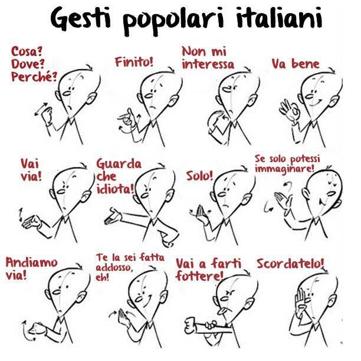

Discover why Italians use gestures when they speak and how these gestures enrich their communication. This article is perfect for those who want to learn unique aspects of Italian culture.
Ci sono diverse ragioni per cui gli italiani gesticolano. Gli antichi Greci portarono questa abitudine in Italia. Nel Sud Italia, si usano molti gesti! Anche, gli italiani usavano i gesti per parlare senza che i dominatori stranieri capissero. Così, i gesti diventavano un linguaggio segreto.
Un'altra ragione è che in passato c'erano molti dialetti in Italia. Usare i gesti aiutava le persone a capirsi meglio. La Commedia dell'Arte, un tipo di teatro italiano, ha anche influenzato i gesti italiani.
I gesti sono importanti nella cultura italiana. Se vuoi imparare l'italiano, conoscere i gesti è un modo divertente per capire meglio la lingua e la cultura.
Il Consolato Americano ha pubblicato un video di un rap, che evidenzia in modo divertente i gesti degli italiani.
Perché gli italiani gesticolano?
Gli italiani usano molti gesti quando parlano, quasi come una "lingua dei segni". Gli esperti dicono che ci sono ragioni storiche per questa abitudine. Una teoria dice che gli antichi Greci hanno influenzato il modo in cui gli italiani si esprimono. Le città erano molto affollate, quindi per attirare l'attenzione, le persone dovevano gesticolare molto.
Un'altra ragione è che in passato, durante le occupazioni straniere, gli italiani usavano i gesti per comunicare senza farsi capire dagli invasori. Inoltre, in Italia c'erano molti dialetti diversi, quindi usare i gesti aiutava le persone a capirsi meglio.
Quanto gesticolano gli italiani?
Gli italiani gesticolano davvero tanto! Alcune persone lo trovano fastidioso. Gli italiani possono fare fino a 250 gesti tipici quando parlano. A volte, le persone esagerano, quasi sfiorando il naso di chi sta vicino. Anche quando parlano al telefono, gesticolano molto!

Ci sono alcuni gesti che sono molto famosi in Italia. Per esempio:
"Che stai dicendo?" - Unire tutte le dita di una mano e agitarla dall'alto verso il basso.
"Vai via" - Gomito al fianco, dita unite, movimento su e giù.
"Ti picchio" - Stessa posizione, ma movimento dall'alto verso il basso.
"Qui non c'è niente" - Pollice e indice aperti, ruotare il polso.
"Va tutto bene" - Indice e pollice uniti, muovere la mano da sinistra a destra.
"Furbo" - Pollice sulla guancia, dall'alto verso il basso.

Se vuoi imparare l'italiano, preparati a gesticolare! I gesti fanno parte dell'esperienza, rendendo la comunicazione più vivace e coinvolgente.
fonte: I Gesti E Gli Italiani: La Comunicazione Oltre Le Parole
Parole Chiave
| Gesticolare | Muovere le mani quando si parla. |
| Gesti | Movimenti delle mani o del corpo. |
| Cultura | Il modo di vivere di un gruppo di persone. |
| Parola | Cosa si dice o si scrive. |
| Comunicare | Parlare o scambiarsi informazioni. |
| Linguaggio | Il modo in cui si parla o si scrive. |
| Teatro | Un posto dove si fanno spettacoli. |
| Storia | Cosa è successo nel passato. |
| Rap | Un tipo di musica parlata. |
| Italiano | Una persona o una cosa dell'Italia. |
Esercizio
Domande
- Perché gli italiani gesticolano molto?
- Come i gesti aiutavano gli italiani con gli stranieri?
- Perché i gesti erano utili per le persone che parlavano dialetti diversi?
- Che cos'è la Commedia dell'Arte e come ha influenzato i gesti italiani?
- Quanto gesticolano gli italiani quando parlano?